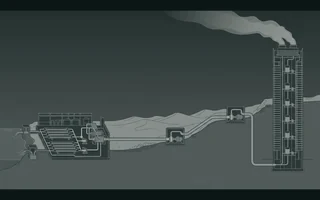
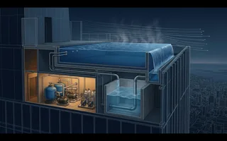
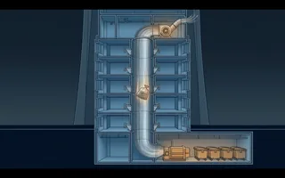

Seven hundred kilometres out.
Then eight hundred up.
Follow one litre from the sea to the top of the tower and you cross every discipline I have worked in. It is one route, and the drawing below carries the whole of it: seven hundred kilometres of carrier in profile on the left, the tower in elevation on the right, sharing a grade line.
Scroll to travel. The marker moves along the profile to the site, then turns and climbs the tower. The instrument reads the same litre of water throughout — the units change at the join, because the problem does.
Distance is the load case out here.
On the carrier, every problem is a function of how far the water has to go. Friction takes 405 metres over seven hundred kilometres and the profile takes another 645, so no single station can deliver it. The grade becomes a sawtooth of seven stations and 50 MW, each one worked backwards from the suction head the next one needs — and the profile is also what decides where the air collects, where the pressure has to be broken, and where a pump trip will tear the column apart.
Above ground it is the same water and a different question entirely. That is the whole argument for keeping both halves of this work on one site: they are not two specialisms, they are the same litre at two scales.
Seven hundred kilometres costs what
the last eight hundred metres costs.
Seven hundred kilometres of carrier delivers into the site at 655 m against a site level of 640 — fifteen metres of head, 1.47 bar. Enough for a garden tap. The tower then lifts the same litre another 828 metres, in seven pressure zones. Set the two bills side by side:
Seven stations, 645 m of lift and 405 m of friction, 50 MW installed — an entire national scheme.
Seven boosted zones inside one building — within a tenth of what the whole 700 km carrier costs.
That parity is the reason this site has to show both. A national carrier crossing seven hundred kilometres of desert and a single tower standing 828 metres tall spend almost the same energy on the same litre — and they are designed by different disciplines, on different drawings, to different codes. I have spent twenty-two years on both sides of that join.
One practice, two drawings.
Everything on this site sits somewhere on that route. Forty-one articles belong to the left-hand drawing, thirty-eight to the right, and the ones that matter most sit at the join — where a transmission engineer hands a litre of water to a building engineer at one and a half bar and walks away.
Along the main
Surge and transients, pipeline design, pump engineering, desalination, networks and leakage.
38 articlesUp the tower
Pressure zoning, HVAC and cooling, plumbing and drainage, fire protection, tall-building systems.
Proposal: this replaces the homepage opening. Both drawings are on screen from the first scroll, so the site says water and buildings at the same time rather than one after the other. The archive, the topic grid and the course sit below it, unchanged.
Seventy-nine articles, filed by subject.
The route above is the argument. This is the library behind it.
One Tower
Every model on this site, coupled to one building. Change the height and watch the pressure zones, mechanical floors, cooling plant and water balance move together.
Collected editionThe Megatall MEP Handbook
Twenty-nine chapters on tall-building services as one printable volume — eight hours of reading, 86 worked models, in the order it should be read.
Technical Writing
Desalination stops at the plant fence and building services start at the site boundary, so nobody adds up the whole chain. A litre reaching a top-floor tap costs about 6 kWh/m³ on the coast and 10 inland, where transmission — not desalination — is the largest term. The tower then evaporates 2,400 m³ a day off its cooling towers, carrying embodied energy equal to roughly a tenth of the chiller plant’s own consumption and appearing on no energy model. With three interactive charts and the levers ranked by what they actually return.

Every megatall tower has a pool, and increasingly it is on the roof — which transforms an ordinary building service into one of the hardest loads in the building, because evaporation depends on air movement and at 300 m there is a great deal of it. The same 400 m² of water loses 384 kg an hour exposed: a 262 kW latent load and 9 m³ a day of makeup. Shelter it and that falls to 104 kW — architecture beating plant. Plus turnover, backwash, balance tanks, spa risk and the 900-tonne mass at roof level — with three interactive charts.

A refuse chute is the only system in a tall building deliberately designed to drop objects hundreds of metres in free fall. A five-kilogram bag reaches 103 km/h and gets to 90 % of terminal velocity in the first 70 metres — so a 600 m chute is no worse than a mid-rise one, but it delivers 2,000 J per bag into a base detail that must be designed for it. Plus the chute as a 200 Pa chimney pushing odour out of the upper hoppers, fire interlocks, and the structure-borne noise of a bag at 100 km/h beside a bedroom — with three interactive charts.
